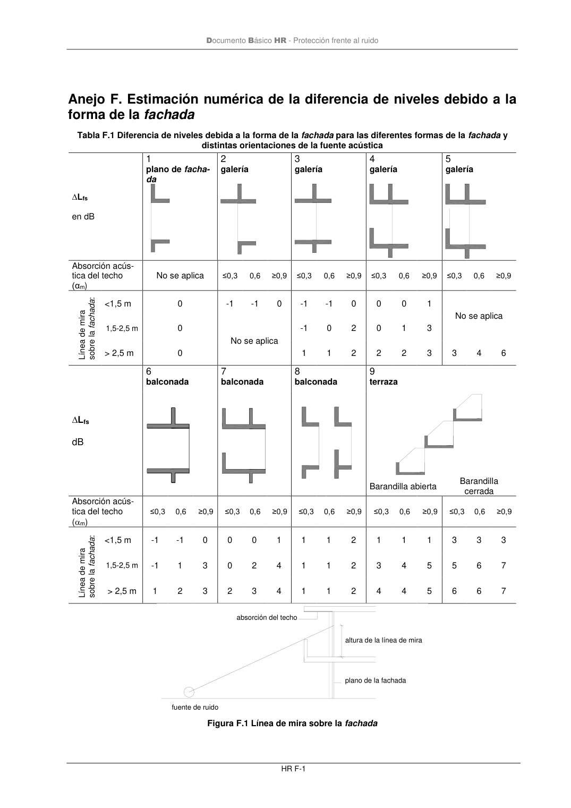

DB-HR Protección frente al ruido · edición 2019-12-20 · capa oficial
Documento DB-HR-oficial · SHA-256 del PDF a67baeca5138bb1f121f797d23a79a4557bd9ac4abacd954024893e05411eeab
Copia fiel del PDF fuente · Fuente oficial
Ficha de la disposición en la fuente oficial
Formatos: JSON del segmento · Markdown
6 Métodos de cálculo de aislamiento acústico y absorción acústica *UNE-EN ISO 12354-1: 2018 Acústica de edificios. Estimación del rendimiento acústico de los edificios a partir del rendimiento de los elementos. Parte 1: Aislamiento acústico a ruido aéreo entre recintos. (ISO 12354-1:2017) *UNE-EN ISO 12354-2: 2018 Acústica de edificios. Estimación del rendimiento acústico de los edificios a partir del rendimiento de los elementos. Parte 2: Aislamiento acústico a ruido de impactos entre recintos. (ISO 12354-2:2017) *UNE-EN ISO 12354-3: 2018 Acústica de edificios. Estimación del rendimiento acústico de los edificios a partir del rendimiento de los elementos. Parte 3: Aislamiento acústico a ruido aéreo frente al ruido exterior. (ISO 12354-3:2017) UNE-EN ISO 12354-4: 2018 Acústica de edificios. Estimación del rendimiento acústico de los edificios a partir del procedimiento de los elementos. Parte 4: Transmisión del ruido interior al exterior. (ISO 12354-4:2017) UNE-EN 12354-5: 2009 Acústica de la edificación. Estimación de las características acústicas de las edificaciones a partir de las características de sus elementos. Parte 5: Niveles sonoros producidos por los equipamientos de las edificaciones. (+UNE-EN 12354-5: 2009/AC: 2010) UNE-EN 12354-6: 2004 Acústica de la edificación. Estimación de las características acústicas de las edificaciones a partir de las características de sus elementos. Parte 6: Absorción sonora en espacios cerrados. Documento Básico HR - Protección frente al ruido HR F-1
